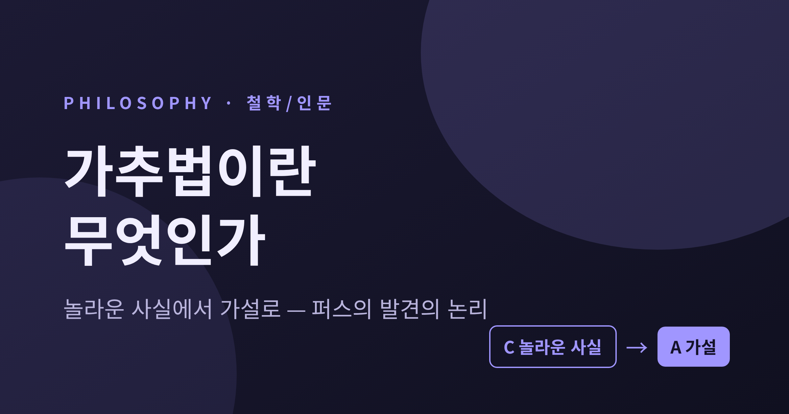
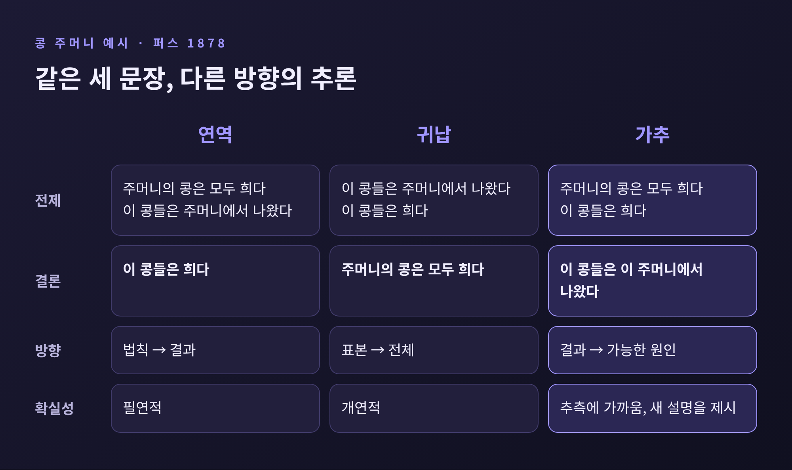
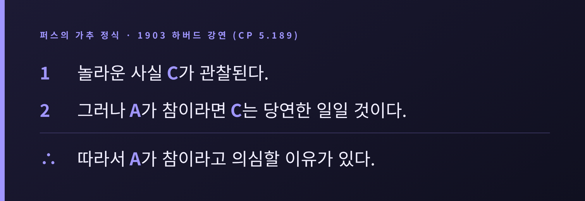
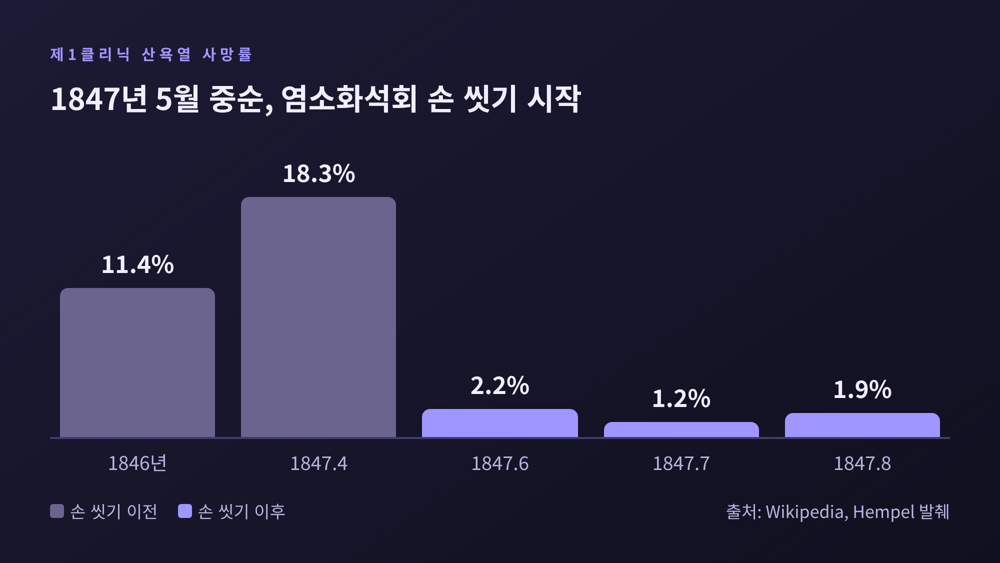
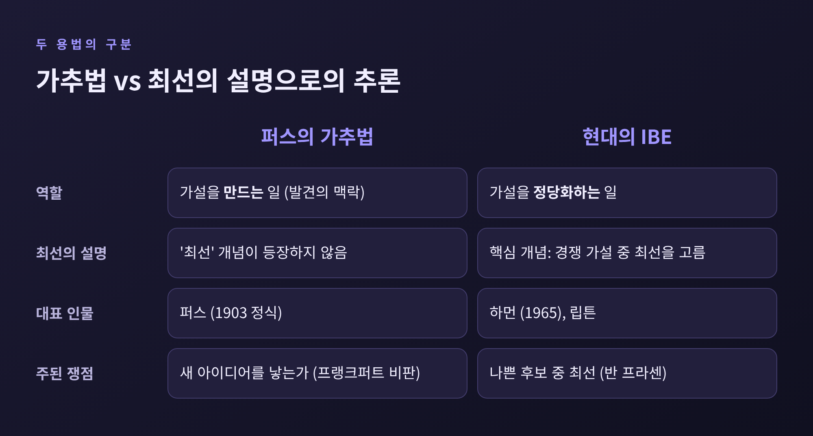

가추법이란 무엇인가 — 퍼스는 왜 발견의 논리를 연역·귀납 앞에 두었을까

이번 글에서는 찰스 샌더스 퍼스의 가추법(abduction)을 정리해 보겠습니다.
가추법은 놀라운 사실을 만났을 때 "무엇이 참이라면 이 일이 당연해질까"를 묻고 가설을 세우는 추론입니다.
과학적 발견과 의사의 진단이 왜 이 단계에서 출발하는지, 연역·귀납과는 무엇이 다른지 차례로 살펴봅니다.
■ 가추법은 어떤 추론인가
퍼스는 1839년 미국 매사추세츠 케임브리지에서 태어났습니다. 화학을 공부했고, 1859년부터 1891년 말까지 해안측지국에서 일한 과학자였으며, 존스홉킨스에서는 논리학을 가르쳤습니다. 과학자의 눈으로 논리를 다룬 사람인 셈입니다.
그가 보기에 당시 논리학은 추론을 연역과 귀납, 둘로만 나누고 있었습니다. 퍼스는 개연적인 추론에 전혀 다른 두 부류가 있다고 주장했습니다. 그중 새로 가려낸 쪽이 가추법입니다. 가설(hypothesis), 후행 추론(retroduction)이라는 이름으로도 불렀습니다.
정의는 짧습니다. 가추법은 설명적 가설을 만드는 과정입니다. 퍼스는 이것이 "새로운 아이디어를 도입하는 유일한 논리적 작동"이라고 썼습니다. 연역은 이미 있는 전제를 풀어내고, 귀납은 이미 있는 사례를 일반화합니다. 낯선 생각이 처음 등장하는 자리는 가추법뿐이라는 뜻입니다.
■ 콩 주머니 하나로 보는 세 가지 추론
퍼스는 1878년 「연역, 귀납, 가설」에서 콩 주머니 예시를 들었습니다. 같은 세 문장을 어떻게 배열하느냐에 따라 추론의 종류가 갈립니다.

연역은 "이 주머니의 콩은 모두 희다. 이 콩들은 이 주머니에서 나왔다. 그러므로 이 콩들은 희다"입니다. 전제가 참이면 결론도 반드시 참입니다.
귀납은 "이 콩들은 이 주머니에서 나왔고 희다. 그러므로 이 주머니의 콩은 모두 희다"입니다. 표본에서 전체로 나아가는 추론이며, 결론은 개연적일 뿐입니다.
가추는 "이 콩들은 희다. 이 주머니의 콩은 모두 희다. 그러므로 이 콩들은 이 주머니에서 나왔다"입니다. 결과를 보고 그럴듯한 원인으로 거슬러 올라갑니다. 퍼스의 후대 해설자들은 여기에 '교육받은 짐작'의 분위기가 있다고 평합니다. 결론이 필연적이지 않다는 점에서 가장 약하지만, 세 추론 중 유일하게 새로운 설명을 내놓습니다.
예전에는 연역만 '진짜 논리'로 쳤습니다. 지금은 가추까지 논리의 한 갈래로 다룹니다. 퍼스가 낸 길입니다.
■ 놀라운 사실에서 시작하는 정식
1903년 하버드 강연에서 퍼스는 가추를 다음 형식으로 정리했습니다.

핵심은 '놀라운 사실'입니다. 예상과 어긋나는 일이 있어야 설명할 필요가 생깁니다. 그리고 결론의 어조가 신중합니다. A가 참"이다"가 아니라 A가 참이라고 "의심할 이유가 있다"입니다. 가추가 내놓는 것은 증명이 아니라 조사할 만한 후보입니다.
이 후보는 어디서 오는 걸까요. 퍼스는 1901년을 전후해 본능이 가설을 만드는 데 한몫한다는 쪽으로 생각을 넓혔다고 알려져 있습니다. 한 연구자는 가추를 "기호의 연속성을 따라가는 빠른 추론"이라고 설명합니다. 너무 빨라서 직관처럼 보일 뿐, 비합리적인 영감은 아니라는 해석입니다.
■ 가추, 연역, 귀납이 맞물리는 과학적 방법
퍼스에게 과학적 방법은 세 추론의 순환입니다. 가추로 가설을 세우고, 연역으로 그 가설이 참이라면 어떤 결과가 나와야 하는지 끌어내고, 귀납으로 실험해 확인합니다. 예측이 맞으면 탐구가 이어지고, 틀리면 새 가설이 필요합니다.
이 순서를 놓치면 오해가 생깁니다. 가추는 "그럴듯하다"에서 멈춥니다. 참이라고 확정하는 일은 뒤의 두 단계가 맡습니다. 퍼스 자신이 대부분의 추측은 틀린다고 말했다는 2차 자료의 소개도 있습니다. 그래서 그는 '연구의 경제'를 강조했습니다. 한정된 시간과 자원으로 가장 쓸모 있는 지식을 얻으려면, 검증하기 쉽고 값싼 가설부터 시험하라는 뜻입니다.
■ 사례 하나: 제멜바이스와 산욕열
이 순환이 실제로 돌아간 장면이 1840년대 빈에 있습니다. 빈 종합병원의 산과 병동은 두 곳으로 나뉘어 있었습니다. 1841년부터 1846년까지 산욕열 사망률은 제1클리닉이 평균 약 10%, 제2클리닉이 4% 미만이었습니다. 1846년에는 11.4%와 2%대 후반으로 벌어졌습니다.
조수였던 이그나츠 제멜바이스는 여러 가설을 차례로 시험했습니다. 유행병설은 제2클리닉과 주변 지역이 멀쩡하다는 점에서 어긋났습니다. 과밀설은 오히려 제2클리닉이 더 붐볐기 때문에 기각됐습니다. 사제의 종소리 연출을 바꿔도, 분만 자세를 바꿔도 사망률은 그대로였습니다.
돌파구는 1847년 초에 왔습니다. 동료 야코프 콜레츠카가 부검 중 학생의 메스에 다친 뒤 산욕열 환자와 비슷한 증상으로 숨졌습니다. 제멜바이스는 부검실의 시체 물질이 의사와 학생의 손을 거쳐 병동으로 옮겨진다고 추정했습니다. 놀라운 사실을 당연하게 만드는 가설이 나온 순간입니다.
이후는 연역과 귀납의 몫이었습니다. 그 가설이 맞다면 손의 오염물을 없애면 사망률이 내려가야 합니다. 제멜바이스는 1847년 5월 중순부터 염소화석회 용액으로 손을 씻게 했습니다. 제1클리닉의 사망률은 4월 18.3%에서 6월 2.2%, 7월 1.2%, 8월 1.9%로 내려갔고, 약 90% 감소해 제2클리닉 수준이 됐습니다.

덧붙일 점이 있습니다. 철학자 칼 헴펠이 정리한 이 사례에서 '가추'라는 낱말이 직접 쓰이지는 않습니다. 가추-연역-귀납의 틀로 읽는 것은 이 글의 해석입니다.
■ 사례 둘: 해왕성과 진단실
같은 구조가 하늘에서도 보입니다. 1781년 천왕성이 발견된 뒤 궤도에는 뉴턴 법칙으로 설명되지 않는 불규칙성이 있었습니다. 천문학자들은 보이지 않는 행성의 인력을 의심했습니다. 파리의 르베리에는 천왕성의 운동에서 거꾸로 계산해 위치를 예측했고, 베를린의 갈레는 1846년 9월 23일 약 1시간 만에 그 행성을 찾았습니다. 예측 위치에서 1도 이내였습니다. 영국의 애덤스도 독립적으로 계산을 했고, 두 사람이 공을 나눠 가졌습니다.
의사의 진단도 닮았습니다. 스탠퍼드 철학 백과사전은 의사들이 환자의 증상을 가장 잘 설명하는 가설을 선호하는 경향이 있다고 소개합니다. 예기치 못한 증상들을 마주하고 "어떤 병이라면 이 모두가 당연할까"를 묻는 것이 그 출발점입니다.
다만 한계도 분명합니다. 존슨 부부의 『Abductive Inference』는 최선의 설명이 실패하는 길을 셋으로 정리합니다. 최선의 설명이 진짜 원인이 아닐 수 있고, 합리적인 시간 안에 찾지 못할 수 있으며, 유일한지 확인할 시간이 없을 수 있습니다. 확률을 앞세운 가추가 의학과 법에서 기저율 오류를 낳기도 한다는 경고도 있습니다.
■ 가추법과 '최선의 설명으로의 추론'은 같은가
요즘 철학 책에서는 가추법을 '최선의 설명으로의 추론(IBE)'과 같은 말로 쓰는 경우가 많습니다. 하지만 이 둘을 구분하자는 목소리도 큽니다.

스탠퍼드 철학 백과사전의 더우번은 두 가지 용법을 나눕니다. 역사적 의미의 가추는 가설을 '만드는' 일이고, 현대적 의미는 가설을 '정당화하는' 일입니다. 더우번은 퍼스의 가추 저술에 '최선'이라는 개념이 나오지 않는다고도 지적합니다. 현대적 용법이 퍼지는 데는 하먼의 1965년 논문 「최선의 설명으로의 추론」이 영향을 미쳤다고 알려져 있습니다. 캄포스는 둘을 같다고 보면 가추와 귀납이 섞인다고 주장했습니다.
비판도 만만치 않습니다. 반 프라센은 '나쁜 후보 중 최선'이라는 문제를 제기했습니다. 후보가 전부 틀렸다면, 그중 가장 나은 설명도 틀린 것입니다. 프랭크퍼트(1958)는 한 걸음 더 나아가, 가설이 두 번째 전제에 이미 들어 있으니 새 아이디어를 낳는 추론이라 부를 수 없다고 따졌습니다. 더우번은 어떤 사실을 만족스럽게 설명하는 가설은 소수일 수 있다고 맞섭니다. 논쟁은 끝나지 않았습니다.
정리하면 이렇습니다.
가추법은 확실함을 주지 않습니다. 대신 탐구가 출발할 곳을 줍니다. 제멜바이스의 손 씻기도, 르베리에의 계산도, 의사의 첫 가설도 "이것이 참이라면 사실이 당연해진다"는 물음에서 시작됐습니다.
"놀라움은 설명을 요구하고, 가추는 그 요구에 후보를 내놓는다."
의심할 이유를 찾는 일과 참임을 보이는 일은 다른 단계입니다. 둘을 나눠 볼 줄 안다면, 그럴듯한 이야기에 쉽게 설득되지도 않고 낯선 가설을 서둘러 버리지도 않게 될 것입니다.